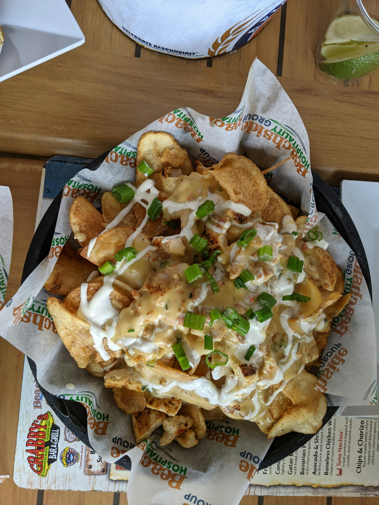

Ham and Cheese Potato Dinner

Description:
This ham and cheesy potato dinner is a super-easy slow cooker recipe with few ingredients and is truly comforting.
Ingredients:
- Cooking Spray
- 28 Oz Frozen Diced Potatoes with Peppers and Onions, thawed
- 2 cups Shredded Cheddar and Monterey Jack Cheese
- 1 (10.5 Oz) Can Condensed Cream of Celery Soup
- 1 (8 Oz) Container Sour Cream
- 1 (3 lb) Boneless Fully Cooked Ham, halved lengthwise
Directions:
- Coat slow cooker with cooking spray.
- Combine potatoes, Cheddar and Monterey Jack cheese, cream of celery soup, and sour cream in the prepared slow cooker; place ham on top. Cover slow cooker.
- Cook on Low for 5 to 6 hours. Stir well before serving.
Home